Cómo entrenar a tu dragón 3 es una película estadounidense perteneciente al género de animación 3D por computadora, de aventura y fantasía, estrenada en 2019, producida por la empresa DreamWorks Animation y distribuida por Universal Pictures, basada libremente en la serie de libros del mismo nombre de Cressida Cowell. Es la continuación de la película animada por computadora de 2010 Cómo entrenar a tu dragón y su secuela de 2014, Cómo entrenar a tu dragón 2.
La película está escrita y dirigida por Dean DeBlois y cuenta con las voces de Jay Baruchel, Cate Blanchett, Gerard Butler, Craig Ferguson, America Ferrera, Jonah Hill, Christopher Mintz-Plasse, T. J. Miller, Kristen Wiig, Kit Harington y F. Murray Abraham. Esta es la primera cinta de DreamWorks Animation distribuida por Universal Pictures, cuya empresa matriz, NBC Universal, adquirió DreamWorks Animation en 2016,3 en vez de la 20th Century Fox, estudio con el cual ha tenido su alianza anteriormente.
Cómo entrenar a tu dragón 3 fue estrenada en Estados Unidos el 22 de febrero de 2019 a través de Universal Pictures.
Cómo entrenar a tu dragón 1
Cómo entrenar a tu dragón (en inglés How to Train Your Dragon) es una película de animación 3D estadounidense de 2010, basada libremente en la serie de libros del mismo nombre de la autora británica Cressida Cowell. El film cuenta con las voces de Jay Baruchel, Gerard Butler, America Ferrera, Christopher Mintz-Plasse y Craig Ferguson. La cinta se estrenó el 26 de marzo de 2010 y se trata de la vigesimosegunda película de los estudios Dreamworks Animation.
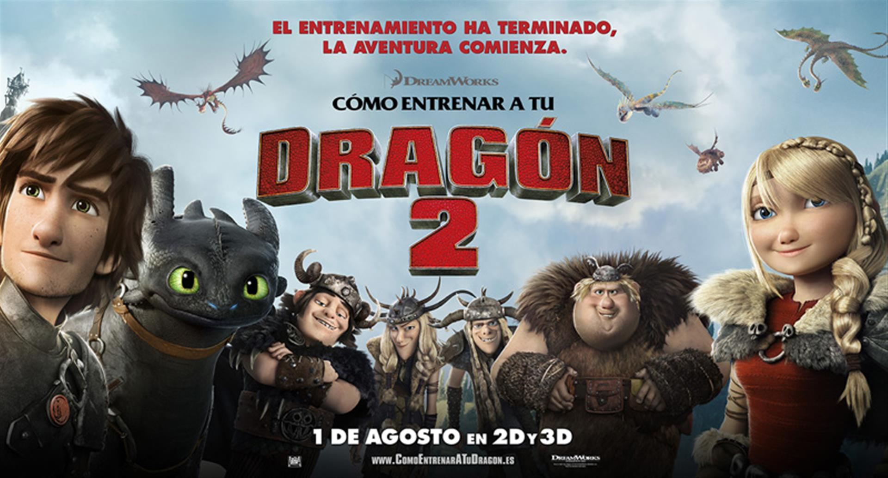
Cómo entrenar a tu dragón 2
Han pasado cinco años desde los sucesos que llevaron a Hiccup a conseguir entrenar a su dragón, rompiendo la estela de su pueblo vikingo de cazarlos. Astrid y el resto de la pandilla han conseguido que la isla tome contacto con un nuevo deporte: las carreras de dragones. Mientras realizan una carrera, atraviesan los cielos llegando a territorios inhóspitos, donde nadie antes ha estado. Explorando nuevos mundos, el viaje les lleva a descubrir una cueva recubierta de hielo que resulta ser el hogar de cientos de nuevos dragones salvajes, protegidos por un misterioso guardián. Hipo y los suyos deberán unirse al guardián para proteger a los dragones de las fuerzas malignas que quieren acabar con ellos.Partiendo como secuela del filme 'Cómo entrenar a tu dragón', la película es también una continuación de las historias originales creadas por Cressida Cowell.
Cómo entrenar a tu dragón 3
Tercera y última entrega de 'Cómo entrenar a tu dragón' en la que descubriremos que, años después de lo ocurrido en la anterior película, Hipo ha conseguido formar la utopia que soñaba en la que dragones y vikingos viven en perfecta armonía, pero todo se ve del revés cuando nuevas amenazas se acercan a Isla Mema de la mano del villano Grimmel. Por otro lado, Desdentao por fin descubrirá que no está solo gracias a la aparición de una esquiva y salvaje dragona de la raza Light Fury. El dragón intentará cortejarla con la ayuda de Hipo pero según se acerque más a su propia naturaleza, se alejará más de su compañero humano. Repite en la dirección Dean DeBlois al igual que el reparto de voces: Cate Blanchett, Jay Baruchel y America Ferrera, entre los principales.
Cómo entrenar a tu dragón Serie
Tras los acontecimientos de la película “Cómo entrenar a tu dragón”, los vikingos de Berk (Mema en España) y sus antiguos enemigos, los dragones, viven felices y en armonía, pero esta coexistencia no es tan armoniosa como uno puede pensar. Los dragones siendo aún fabulosas bestias salvajes, sin querer crean algunos problemas en la isla; y otra vez, dando lugar al más gruñón entre los vikingos (Mohoso en España), a tomar una excepción a su presencia. Y en cada ocasión tal, corresponde a Hipo y a sus amigos, trabajar en una solución para el problema.
Cómo entrenar a tu dragón Libros
1. Cómo entrenar a tu Dragón
2. Manual de Dragones
3. Serie de Libros de Cómo Entrenar a tu Dragón
4. Cómo hablar Dragonés
5. Cómo romperle el Corazón a un Dragón
6. Manual de Dragones Mortíferos
7. Cómo ser un Pirata
8. Arte de Cómo Entrenar a tu Dragón
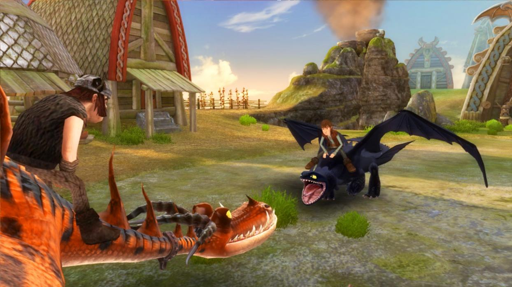
Cómo entrenar a tu dragón Juegos
1. Dragones: El Resurgir de Mema
2. Escuela de Dragones
3. Cómo entrenar a tu dragón
4. Cielos Salvajes
Personajes
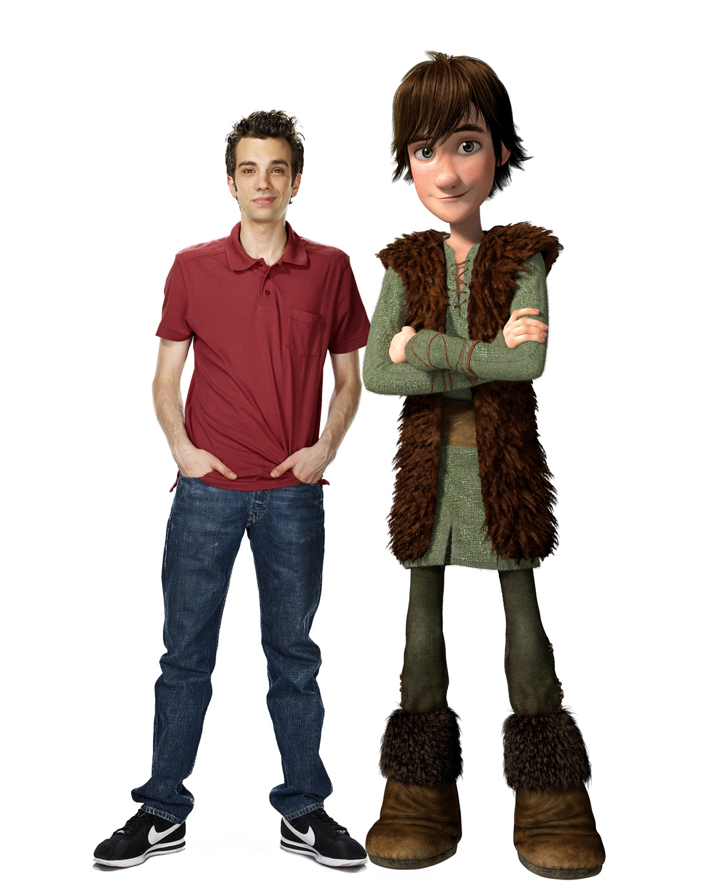
Hipo Abadejo III
Valiente, curioso, bueno y audaz héroe por haber inaugurado una era de paz entre vikingos y dragones. Al principio quería matar dragones y ser un vikingo como su padre, pero después se arrepiente cuando encuentra a un Furia Nocturna, un dragón que se convierte en su mejor amigo. Además, es el primer vikingo en montar un dragón. Su dragón es Toothless (Chimuelo en Latinoamérica y Desdentado en España).
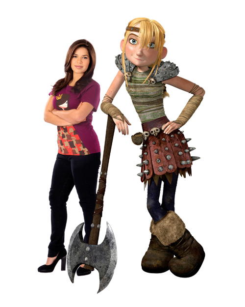
Astrid Hofferson
Sorprendente, enérgica, hermosa y dura, Astrid es la quinta esencia del carácter vikingo. Su personalidad competitiva y decisiva hace que sea difícil de impresionar. Cuando Hipo comienza a acusar la tensión de llevar su doble vida secreta, Astrid es la primera en sospechar. Termina enamorándose de Hipo y se vuelven novios, cuando vuelan juntos después de que ella descubriera a Toothless. Su dragón es un Nadder Mortífero llamado Stormfly (Tormenta en Latinoamérica y en España).
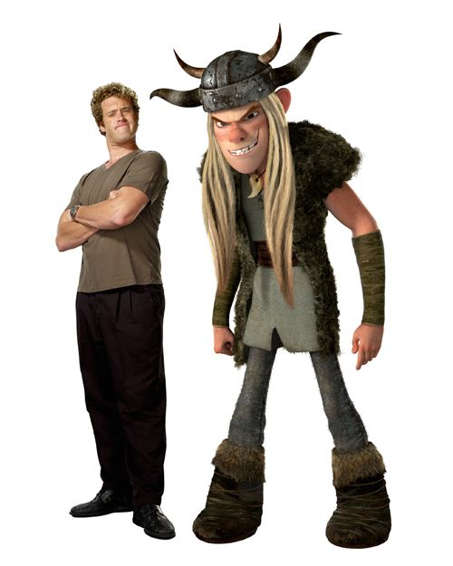
Brutacio Thorston
Son dos mellizos, ambos van de matones desalmados con malas intenciones y peor carácter, sobre todo el uno con el otro. Vikingos amantes a la adrenalina, ninguna situación es lo bastante peligrosa como para que no se diviertan salvajemente. Su dragón es un Cremallerus Espantosus llamado Barf y Belch (Vómito y Eructo en España, Guácara y Eructo en Latinoamérica).
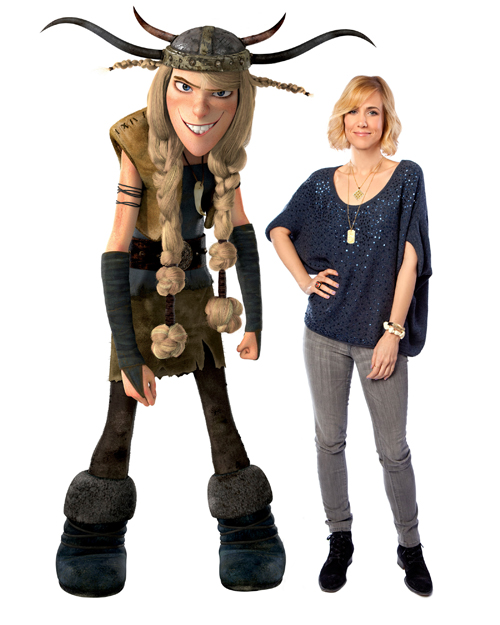
Bruthilda Thorston
Son dos mellizos, ambos van de matones desalmados con malas intenciones y peor carácter, sobre todo el uno con el otro. Vikingos amantes a la adrenalina, ninguna situación es lo bastante peligrosa como para que no se diviertan salvajemente. Su dragón es un Cremallerus Espantosus llamado Barf y Belch (Vómito y Eructo en España, Guácara y Eructo en Latinoamérica).
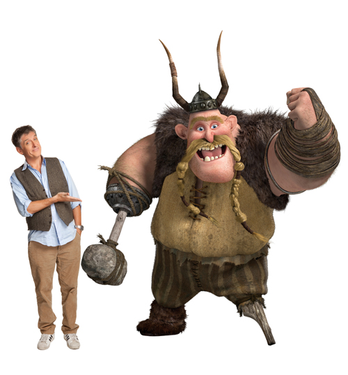
Bocón el Rudo
El mejor amigo del jefe Estoico y veterano guerrero de la tribu. Es el encargado de dirigir el entrenamiento con dragones. Le faltan una pierna y una mano, que reemplaza por múltiples herramientas. Es herrero y lleva la forja en la que Hipo trabaja como su aprendiz. Bocón tiene buenas intenciones pero generalmente da malos consejos.
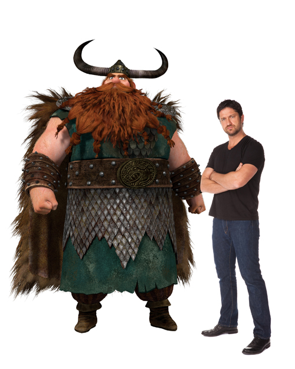
Estoico el Basto
Es el jefe de la tribu. Inmensamente fuerte, temerario y fiero, encarna las más tradicionales virtudes vikingas. Es un padre confuso que no entiende a su inteligente e inquieto hijo. Intentando que el muchacho demuestre por fin al vikingo que lleva dentro, Estoico inscribe a Hipo en el entrenamiento con dragones, una peligrosa prueba de destreza y combate, pues Hipo siempre ha querido entrar en el entrenamiento para demostrar que puede llegar a ser un vikingo excepcional. Estuvo casado con Valka, pero su esposa desapareció un día en que Berk ardió en llamas, por un ataque letal de los dragones.
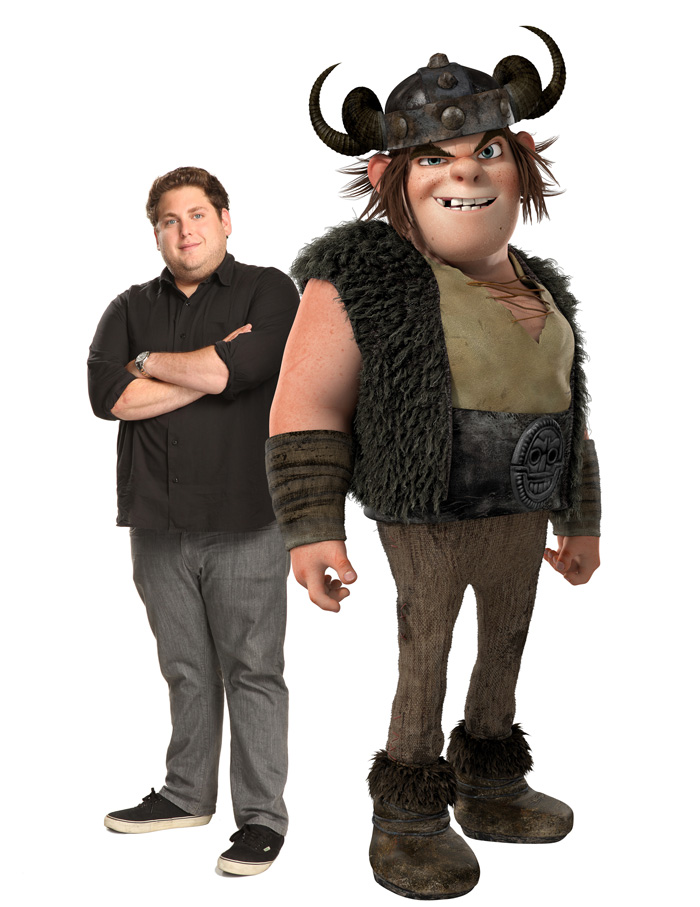
Patán Mocoso
Es fuerte, fanfarrón y confiado. Aunque al principio, a pesar de ser primos, se mete con Hipo por ser debilucho, termina respetándolo a regañadientes por su inesperado valor. Muestra interés por Astrid y realiza varios intentos de impresionarla, pero sin ningún éxito considerable porque ella ama a Hipo. Su dragón es un Pesadilla Monstruosa llamado Hookfang (Garfios en España, Colmillo en Latinoamérica)
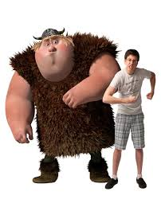
Patapez Ingerman
Patapez es grande de tamaño pero asustadizo. Es inteligente y ha memorizado completo el Libro de Dragones (puesto que lo ha leído siete veces). Es capaz de ofrecer información rápidamente sobre la Pesadilla Monstruosa, aunque expresa sus conocimientos en jerga de juegos de rol. Su dragón es un Gronckle llamado Meatlug (Barrilete en España, Albóndiga en Latinoamérica). En "El regalo de la Furia Nocturna" dicen que sólo los dragones hembra ponen huevos, entonces se descubre que su dragón en realidad era una dragona. Según el libro, Hipo y él son amigos, pero en la película no son muy cercanos. Se obsesiona mucho con los mapas.
Cómo Hablar Dragonés es el tercer libro de la serie de libros de Cómo entrenar a tu dragón.
En la tercera parte, mientras Hipo y Patapez están en mar abierto aprendiendo a abordar una nave enemiga, se pierden quedando con la ayuda de Chimuelo, ya que Horrorcow, el dragón de Patapez, se quedó dormido. Ellos accidentalmente se cruzan con un barco romano. Aparentemente, estaban planeando atacar Berk y robarse todos sus dragones. Los romanos toman a Chimuelo, y los chicos deben volver a la isla. Bocón les grita e Hipo recibe un boletín de calificaciones terrible. Hipo no puede dormir esa noche sin su mejor amigo, Chimuelo.
En la mañana, Hipo encuentra un Nanodragón en el bolsillo de su abrigo. El dragón Afirma que es un dios viviente llamado Ziggerastica. Él le dice a Hipo que si dice su nombre, él vendrá a ayudarlo.
Los chicos son secuestrados por romanos mal vestidos tratando de hacerse pasar por Bog-Burglars. Llevan a ambos Hipo y Patapez al barco romano. Hipo se encuentra con Alvin el Traidor (de Cómo ser un pirata) y él los pone en una prisión llena de dragones enjaulados. Dentro de la prisión conocen a una chica heredera de la tribu Bog-Burglars llamada Camicazi. La chica piensa que Hipo y Patapez son espias romanos, por lo que tienen una pelea de espadas. Con el tiempo, ella descubre que no son espias, pero siguen atrapados. Hipo encuentra a Chimuelo en una jaula, y ahora están reunidos de nuevo. Hipo llama a Ziggarastica, quien se va volando tan pronto como vino. Los chicos y Chimuelo son llevados a una arena para luchar contra una espesie de dragones llamada Sharkworms. En el interior, Hipo es lanzado en el aire, causando que la gente crea que es un dios por este espectáculo facinante. Se escapan de la nave y liberan a Ziggarastica junto a otros Nanodragones que estaban ayudando a Hipo a volar. Luego viajan de vuelta a Berk en un globo aerostático. En el camino son atacados por un Venomous Vorpent, el cual muerde a uno de ellos. En el epílogo se dice que uno de ellos fué envenenado.
Cómo romper el corazón de un dragón
Cómo romperle el Corazón a un Dragón (How to Break a Dragon's Heart en Inglés) es el octavo libro de la serie de libros de Cómo entrenar a tu Dragón.
La historia comienza con la desaparición de Camicazi por Jefe Berserk, van Hipo, Patán, Patapez, esta vez los jóvenes terriblemente terminan en las tierras de U´glithug y Patapez se enamora de Tantrum U´gerly y se vuelve su prometido al igual que Hipo, tienen que ir a Berk dándose por vencidos en la búsqueda de Camicazi así que en Berk se ponen a entrenar para ver la forma de como atacar a un Berserker con la ayuda de Bocón. Entonces al hacer que Patapez se caiga y se entre en modo Berserker, se da cuenta de que el nació en Berserk y se da a conocer que a Patapez lo adoptaron en Berk. Entonces el se va solo a Berserk, para darse cuenta de que lo desterraron cuando nació por ser tan débil. Hipo lo sigue para darse cuenta de que su archi-enemigo Alvin el Traidor sigue vivo, conoce a la madre de Alvin quien le cuenta de sus antecesores "Hipo Horrendo Abadejo I" e "Hipo Horrendo Abadejo II". Después de rescatar a Camicazi se da cuenta de que la Bestia es el hermano dragón de "Hipo Horrendo Abadejo II" ahí se encuentra con Humungously Hotshot el Héroe quien también iba a Tantrum. Después de irse de Berserk, se dan cuenta de que Torméntula que estaba desaparecida y Camicazi fue a buscarla y por eso desaprecio, finalmente reapareció en la playa de Berserk. Y todos regresan a donde pertenecen.
Cómo robar la espada de un dragón
How to Steal a Dragon's Sword es el noveno libro de la saga de libros de Cómo Entrenar a tu Dragón.
Hipo, Patapez, Camicazi y todos los demás aspirantes a guerreros de todas las otras tribus deben ir a la Escuela de Flashburn de Esgrima de la manera difícil, que es subiendo por una pared del Acantilado Escarpado, mientras que los adultos utilizan el camino más fácil. Al mismo tiempo, la primera ola de la Rebelión del dragón ataca Hipo y los otros. Cuando llegan a la escuela, les resulta desierta. Los adultos llegan, con señales de otro ataque. Los jefes encuentran a la bruja Excellinor en un caldero, donde ella reside, diciéndoles que Flashburn y los otros murieron luchando contra unos Rogue Dragons. Ella les dice que la única manera de derrotar a los dragones es mediante la elección de un nuevo rey de Wilderwest. El nuevo rey tendrá Cosas del Rey y será decidido por el torneo de Esgrima en Año Nuevo. Hipo ya tiene Endeavor, la cosa que hace tic tac, el Escudo Romano, la Flecha Americana, Desdentado, el corazón de rubí, el trono de Wilderwest, la Llave que Abre Todas las Puertas, y sólo le hace falta la Corona y la Joya del Dragón. Excellinor también dice a los vikingos que Hipo dejó en libertad a Furioso y causó la Guerra. Los Marginados aparecen también, con Alvin a cargo de nuevo. También están en la competencia debido a la línea de Thugheart. De pronto, todos los mejores espadachines consiguen lesiones misteriosas después de visitar Excellinor para que les lea su fortuna. Estoico desaparece también y Hipo va a la cabaña de la bruja para encontrarlo. Allí, Excellinor le dice que debe encontrar la corona en 3 horas o su padre muere. Hipo, Camicazi, Patapez y sus dragones entran en el laberinto y encontrar Flashburn. Flashburn les dice Excellinor lo engañó para encontrar la corona hace 20 años, y todavía no ha succeded. Uso de la cosa-tic-tac, Hiccup descubre la corona, que protege Wodensfang, el dragón de Hipo la Primera. Después de escuchar a Hipo, Hipo Wodensfang permite tomar la corona y vivir, pero pronto están rodeados de dragones rojos Rage
Manual de Dragones Mortíferos
Manual de Dragones Mortíferos es el sexto libro de la serie de libros Cómo entrenar a tu dragón. Publicado en 2007, es el único libro de la serie que no comienza con un "Cómo
El libro comienza con Hipo en la repisa de la ventana, sólo en la Biblioteca Pública de Meathead que no está abierta al público durante las 12 p.m. del día de su cumpleaños 12. Los libros son, de hecho, considerados peligrosos y deben ser encerrados. Las puertas estaban cerradas y custodiadas por 400 soldados Cabeza Cuadrada, sus Dragones Taladro y el Bibliotecario Pelopunta. Estaba pensando para sí: " ¿Qué estoy haciendo? Este es mi CUMPLEAÑOS, por el amor de Thor. Debería estar sentado en casa disfrutando de mí mismo en lugar de arriesgar mi cuello 300 pies en una biblioteca de perdición .... ¿Qué estoy haciendo? ¿Cómo me metí en este lío en primer lugar? NADA podría ser peor que esto .... " De repente, pierde el equilibrio y acaba colgando de una mano en la repisa con 400 flechas apuntando a él, y Dragones Taladro volando hacia él. Después, en el capítulo sugiente, se muestra cómo se metió en esa situación difícil. Él despertó a las 7 de la mañana y pidió el deseo de que fuera un día pacífico. Luego trató de que Chimuelo comiera un desayuno saludable, lo que significa espinacas y madera. Entonces Chimuelo debía comerse un trozo de madera que Hipo le puso en el plato y cuando Chimuelo no se lo comió, Hipo lo dejó ahí solo para que se comiera las espinacas y la madera. Después fue a las finales de una competencia de saqueo, en la que los Gamberros fueron completamente vencidos por los Bog-Burglars en cada evento. Él se reunió con sus amigos y Camicazi. Ella había conseguido robar varias cosas, incluyendo la ropa interior de Estoico. Cuando entran a la casa de Hipo, el lugar estaba repleto de espinacas y el nuevo trono de madera de Estoico es y estaba consumido en su mayoría y encontraron a Chimuelo sentado en el medio mirandolos con cara culpable. Estoico entra a la sala, ya de mal humor a causa de la apuesta que hizo con Grandísima Bertha de que los Gamberros son tan buenos saqueando como ellos, pierde la paciencia cuando ve su trono. Patapez casi logra calmarlo hasta que una de las patas de la silla se rompe causando que Estoico caiga y Camicazi se ríe. Estoico luego nota que ella traía uno de sus calzones y la amenaza con hacerla desaparecer si volvía a hacer algo así. Después de que Estoico se va, Hipo nota que Chimuelo destruyó el libro que su padre había ido a buscar, pensando que iba a ganar la apuesta. Fueron transportados hasta la biblioteca por un dragón invicible que Bertha le robó a Madguts el Asesino.
Cómo ser un pirata
Cómo ser un Pirata (How to be a Pirate en inglés) es el segundo libro de la serie de libros de Cómo entrenar a tu dragón y el único cuyo título no menciona a los dragones
Hipo y Patapez encuentran un ataúd en el mar durante las clases de lucha con espada. Cuando los Hooligans Peludos abren el ataúd, se encuentran con que contiene a Alvin el Traidor, quien lleva el nombre de Alvin el Granjero Pobre pero Honrado. Pronto nos damos cuenta, más adelante en el libro, que Alvin pertenece a la tribu Outcast y que se convertirá en el peor enemigo de Hipo. Alvin le dice a los Hooligan Peludos un enigma para encontrar el tesoro de Grimbeard el Horrible el mejor pirata del mundo, y el tatara tatara abuelo de Hipo.
Los Hooligans Peludos van a la isla mencionada en el enigma, la isla de los Skullions, y encuentran un pequeño cofre lleno de tesoros. Sin embargo, Grimbeard, puso en el cofre una trampa explosiva con un olor que despertaría a todos los Skullions, dragones sin orejas ni ojos, con un exepcional sentido del olfato. Hipo casi es asesinado por un Skullion, pero es salvado por su padre. Los Hooligans y Alvin el Traicionero corren a las naves con el tesoro, y empiesa la lucha por el botín. En el transcurso de las pelea, las naves son abordadas por Vikingos canívales, causando que estas se undan. Todo mundo salta de los barcos, a exepción de Hipo, Patapez, Chimuelo y Alvin el Traicionero.
El barco se hunde, y todos ellos sobreviven gracias a que encontraron una cueva marina con aire. Chimuelo encuentra una puerta que se abre en una caverna llena de oro y joyas, y Alvin trata de matar a Hipo para evitar que tome algún tesoro. Afortunadamente, Alvin pisa un montón de tesoro que lo atrapa por detrás y lo arrastra. Hipo se dá cuenta de que hay un Mounstrous Estrangulator, un dragón con forma parecida a un pulpo, en la cueva. Alvin es rápidamente deborado, pero Hipo engaña al Monstrous Estrangulator para que se envenene a sí mismo. Escapan de la cueva, e Hipo decide que el mundo todavía no está listo para el tesoro. Hipo y Patapez pronto llegan a la superficie, con ayuda de Chimuelo, y todos ellos regresan a salvo a la aldea. Sin embargo, como se dice al final del libro, ¿Alvin está realmente muerto?
Cómo entrenar a tu dragón
Cómo Entrenar a tu Dragón es el primer libro de la serie por Cressida Cowell. El libro trata sobre las aventuras de Hipo Horrendo Abadejo III, el hijo de 11 años de Estoico el Inmenso, un jefe vikingo. En la isla de Mema, un grupo de chicos jóvenes de los Gamberros Peludos son instruidos por Bocón el Rudo para llevar a cabo su primera operación militar para capturar su propio dragón. Los que no son capaces de capturar y entrenar a un dragón son exiliados de la tribu, y los que cumplen la misión se inician en la tribu como miembros en pleno derecho.
Un grupo de niños de las tribus de los Gamberros Peludos y los Cabezas Cuadradas intentan convertirse en miembros de pleno derecho de sus respectivas tribus pasando el rito de Iniciación. Dos chicos, Hipo, hijo de Estoico el Inmenso, el jefe de la tribu Gamberros, y Patapez, amigo de Hipo quien tiene un gran amor hacia los reptiles, intentan completar dicho rito cuanto antes posible. Todos los otros chicos son fuertes y varoniles, como todo vikingo debe ser, excepto Hipo y Patapez, quienes son demasiado delgados y debiluchos.
Bocón el Rudo, el soldado a cargo de la iniciación, conduce a los jóvenes Vikingos a la cima del Acantilado del Dragón Salvaje, donde tienen que completar la primera parte de la Iniciación: atrapar a su primer dragón. Dentro de la cueva, Patapez despierta a todos los dragones jóvenes tratando de conseguir un Deadly Nadder. En un apuro por escapar, Hipo le da a Patapez su dragón y regresa y agarra uno diferente. Bocón los salva de que los ataquen los dragones, pero los regaña más tarde.
Hipo descubre que el dragón que robó es un pequeño Común o de Jardín, al cual Patán nombró Desdentado como un chiste. Desdentado fué finalmente entrenado, después de varios meses, cuando Hipo empezó a contarle chistes. En el día oficial de la iniciación, ninguno de los chicos logró pasar la prueba requerida para iniciarse en su tribu. Esto se debe a que Gusano de Fuego, la Monstruo de Pesadilla de Patán, se burló de Desdentado y éste comenzó una pelea a la que luego se sumaron los otros dragones. Estoico es forzado a desterrar a Hipo y al resto de los chicos.
Durante la noche, una tormenta traída por Thor, trae a dos serpientes marinas a las costas de Berk. Mientras que los adultos gamberros y cabezones piensan qué hacer, Bruto, heredero de los cabezones, le dice a Hipo que debe pensar en un plan. Hipo finalmente sale con un "plan diabólicamente inteligente": molestar a los dragones, dirigirlos el uno al otro, y dejar que se maten entre ellos. Sin embargo, el plan solo mata a uno de los dos dragones, Muerte Púrpura, pero Muerte Verde sobrevive y comienza a cazar a Hipo. Hipo es devorado finalmente, pero logra matar a la Muerte Verde desde el interior tapando sus orificios de fuego. Hipo fué salvado por Desdentado, el único dragón que no abandonó a su maestro.
Debido a esta acción no tan heroica, a todos los chicos se les permitió unirse a sus respectivas tribus después de todo.
Videojuegos
Nombre
Imagen
Desarroladora
Plataformas
Dragones: El Resurgir de Mema
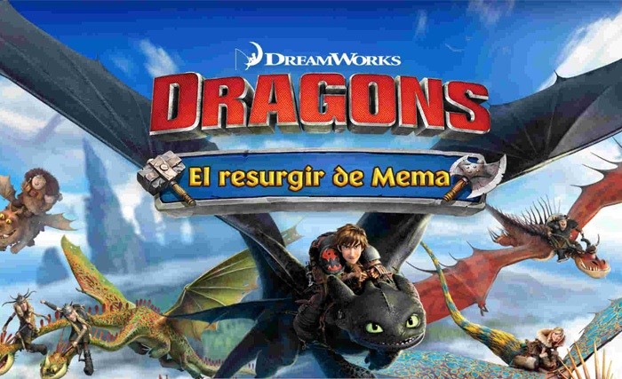
Ludia
Google Play, iTunes, Amazon Appstore, Facebook
Escuela de Dragones
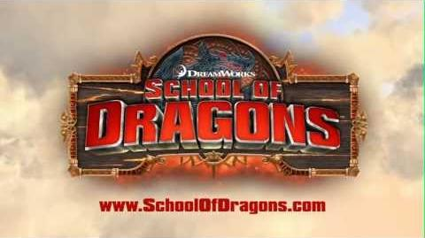
JumpStart, Knowledge Adventure
Google Play, iTunes, Amazon, Windows, Facebook
Cómo entrenar a tu dragón (videojuego)
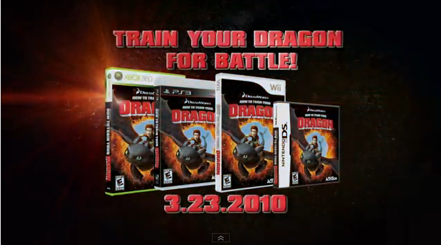
Étranges Libellules
Nintendo Wii, Xbox 360, PlayStation 3, Nintendo DS